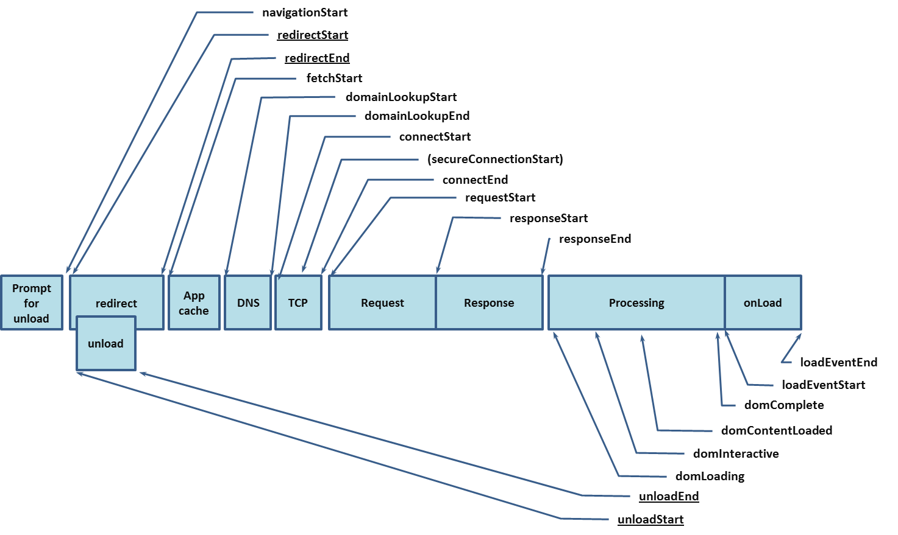

Performance：用来获取页面加载的各种时间的数据
分类
Performance 分了很多类，虽然都是window.perfomance的属性，但是却有分类
Performance API分为 User Timing 和 Navigation Timing
为什么要在意这个分类？因为兼容不一样！
Navigation Timing API
所谓 Navigation Timing ，浏览器帮你统计好的各种时间，如下图

具体每个字段的解释可以参考w3c文档或者阮一峰的博客，如下：
https://www.w3.org/TR/navigation-timing/
https://javascript.ruanyifeng.com/bom/performance.html
我根据这些字段获取了以下的时间段：
|
|
User Timing API
所谓User Timing，就是用户自己去统计各时间段。
通过mark，clearmarks，measure，clearMeasures等获取自己想要统计的时间段。
具体使用可以参考阮一峰的博客：
https://javascript.ruanyifeng.com/bom/performance.html
getEntries好像不算是User Timing API。
参考w3c文档：
https://www.w3.org/TR/performance-timeline/#dom-performance-getentries
而User Timing API的w3c文档在这里：
https://www.w3.org/TR/user-timing/
但在开发者自己去统计各时间段的时候，很可能会用到getEntries方法
getEntries()
通过getEntries()，可以获得该页面所有资源的加载过程各阶段的时刻及其他信息。
比如：
|
|
兼容的问题
实时参考：
https://caniuse.com/#search=performance
我在这个问题上纠结了很久，有以下经验：
- 如caniuse网站上，Navigation Timing API 支持高版本的Safari；而User Timing API不支持Safari。
getEntries()在安卓的微信客户端内置浏览器是支持的，但是在苹果客户端的微信内置浏览器是不支持的。
何时获取？
最后一个很重要的问题，在什么时候去获取这些数据？
直接在js里获取，果断不行，你这段js代码在执行的时候，页面加载还没有完成，好多数据都没有！
window的load事件时获取也不能获取到完整很多数据，毕竟事情也还没做完。
最后我只能用这个蠢办法：
在window的load事件时setTimeOut 1秒钟，去获取这些数据。
希望有更好的方式，TODO